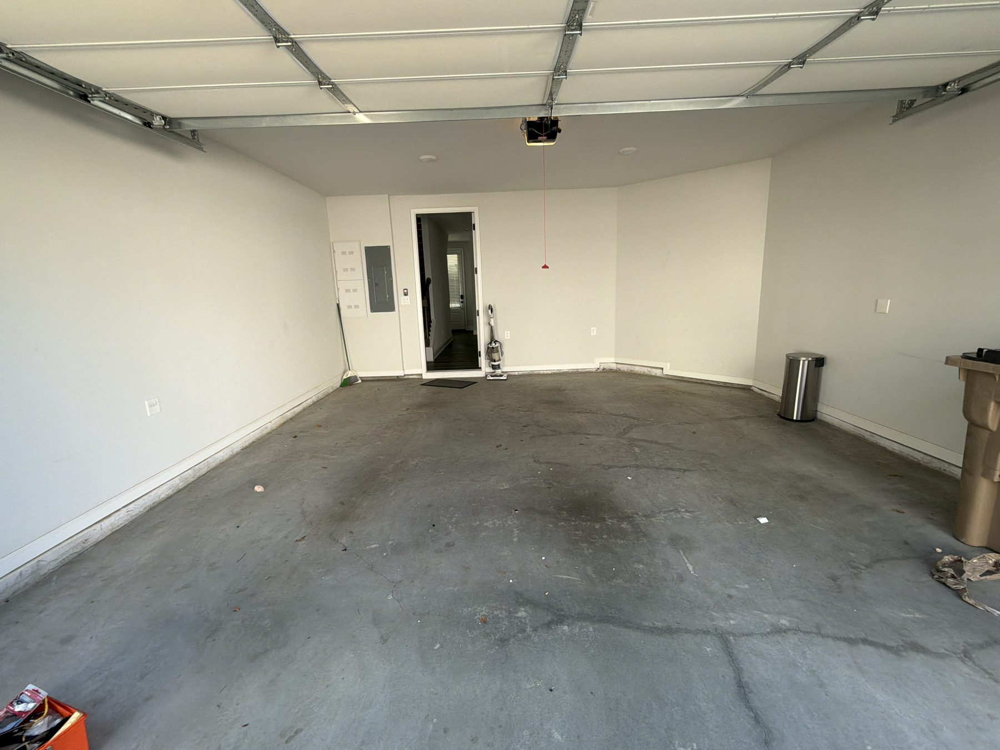

Choose the clearest pricing path
List known pieces for item pricing or choose trailer space for mixed piles and whole-room cleanouts
Big Boys helps Metro Atlanta homes and businesses reclaim space without the guesswork
Big Boys Junk Removal serves customers throughout Metro Atlanta from Atlanta and Suwanee. We remove furniture, appliances, mattresses, hot tubs, yard waste, construction debris, commercial junk, and mixed household items. Whether the job is one bulky sofa or a property-wide cleanout, our goal is to make the next step easy to understand.
Customers can begin online, choose pricing by individual item or estimated trailer space, add access details, and review a clear starting estimate before requesting service. When a cleanout is difficult to size online, our team is available by phone to talk through the scope.
You point to what needs to go and the crew does the lifting. Share stairs, elevators, narrow hallways, disassembly needs, parking restrictions, or building rules in advance so we can arrive with a practical plan.

Good junk removal is not just a truck. It is a clear scope, thoughtful preparation, respectful work, and a clean handoff
List known pieces for item pricing or choose trailer space for mixed piles and whole-room cleanouts
Add stairs, access, parking, disassembly, timing, and special instructions before the visit
The team reviews your request, confirms availability, and makes sure the scope is understood
Homeowners call after moving, replacing furniture, reorganizing a garage, or clearing years of accumulated belongings. Renters and landlords use Big Boys for move-outs and unit turns. Property managers and businesses request removal for office furniture, storage areas, retail fixtures, and recurring overflow.
Every job is different, but the questions stay practical: what is leaving, how much space will it take, where is it located, and when does it need to be gone. Our pricing and booking flow is designed around those answers.